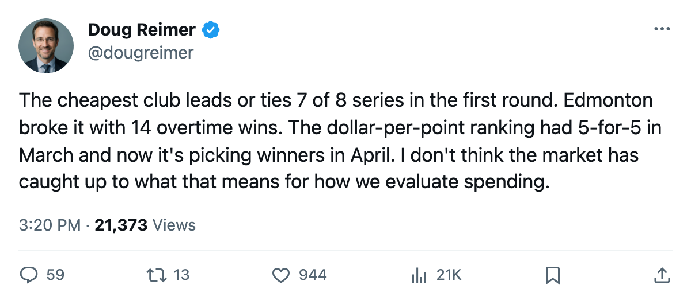
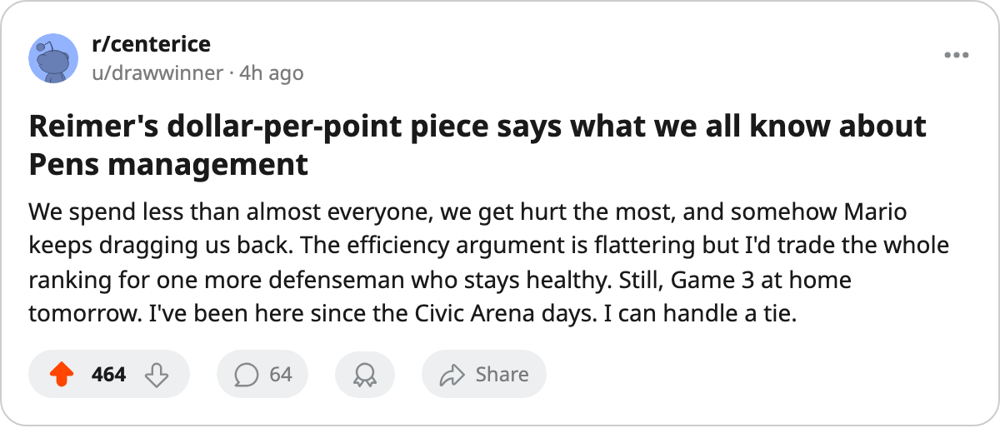

Dollar-per-Point in Round 1: The Cheaper Club Leads or Is Tied in 7 of 8
The efficiency ranking that picked the playoff field is picking the first-round winners too. One series bucked the trend, and it happened in Edmonton.
 Doug ReimerAnalytics editor, ex-video coach · The Slot Report
Doug ReimerAnalytics editor, ex-video coach · The Slot Report
Across 8 first-round matchups, the club with the lower regular-season payroll per point leads its series or is tied after 2 games in 7 of 8.
The method is the same one the desk used on 2005-03-07, when the five most efficient clubs finished a perfect 5-for-5 for playoff berths. I took the dollar-per-point figures from the final regular-season payroll and standings for every club, matched each club to its playoff opponent, and ranked the pairings. The table below shows both sides of each matchup and the series result through 2 games.
The efficiency ledger
| Matchup | Cheaper | $/Pt | Pricier | $/Pt | Series Leader |
|---|---|---|---|---|---|
 Toronto Maple Leafs v Toronto Maple Leafs v  New York Islanders New York Islanders | TOR | $0.45M | NYI | $0.62M | TOR, 2-0 |
 New Jersey Devils v New Jersey Devils v  Pittsburgh Penguins Pittsburgh Penguins | NJ | $0.40M | PIT | $0.53M | Tied, 1-1 |
 Tampa Bay Lightning v Tampa Bay Lightning v  Boston Bruins Boston Bruins | TB | $0.45M | BOS | $0.45M | Tied, 1-1 |
 Washington Capitals v Washington Capitals v  Carolina Hurricanes Carolina Hurricanes | WSH | $0.54M | CAR | $0.56M | WSH, 2-0 |
 Colorado Avalanche v Colorado Avalanche v  Phoenix Coyotes Phoenix Coyotes | PHX | $0.51M | COL | $0.64M | Tied, 1-1 |
 Dallas Stars v Dallas Stars v  Detroit Red Wings Detroit Red Wings | DAL | $0.62M | DET | $0.84M | DAL, 2-0 |
 Nashville Predators v Nashville Predators v  Mighty Ducks of Anaheim Mighty Ducks of Anaheim | ANA | $0.42M | NSH | $0.46M | Tied, 1-1 |
 Vancouver Canucks v Vancouver Canucks v  Edmonton Oilers Edmonton Oilers | VAN | $0.36M | EDM | $0.38M | EDM, 2-0 |
The 3 series where the cheaper club holds the lead share something else: they have the widest dollar-per-point gaps on the board. Dallas Stars and Detroit Red Wings are separated by the largest spread in the bracket, $0.62M against $0.84M. Toronto at $0.45M against New York Islanders at $0.62M is the second-widest. Washington Capitals at $0.54M against Carolina Hurricanes at $0.56M is the narrowest of the three, and Washington still holds 2 of 2.
The 4 tied series include 2 where the clubs are effectively identical in spending efficiency. Tampa Bay Lightning and Boston Bruins both land at $0.45M per point, dead even. Mighty Ducks of Anaheim and Nashville Predators sit at $0.42M and $0.46M. These are coin-flip budgets.
Edmonton broke it
Edmonton Oilers leads Vancouver Canucks 2-0, which makes Edmonton the only club in the bracket that pays more per point than its opponent and holds the lead. Vancouver carries the cheapest payroll in the league, $35.16M, producing $0.36M per point. Edmonton pays $36.81M, returning $0.38M per point.
Edmonton won both games by 1 goal, one in overtime.  Tommy Salo85 carries a 1.92 GAA and a .868 save percentage across 2 games.
Tommy Salo85 carries a 1.92 GAA and a .868 save percentage across 2 games.  Dan Cloutier85 managed .842 in his single start before a designation, and
Dan Cloutier85 managed .842 in his single start before a designation, and  Tyler Moss74 stepped in with .889 in the second. The goaltending gap is not large. The offense gap is: Edmonton has 4 different men with 2 or more points through 2 games, led by
Tyler Moss74 stepped in with .889 in the second. The goaltending gap is not large. The offense gap is: Edmonton has 4 different men with 2 or more points through 2 games, led by  Mike York79 at 2+2=4 and
Mike York79 at 2+2=4 and  Radek Dvorak78 at 2+2=4. Vancouver's top 2-game scorer is
Radek Dvorak78 at 2+2=4. Vancouver's top 2-game scorer is  Markus Naslund89 at 2+2=4, with
Markus Naslund89 at 2+2=4, with  Todd Bertuzzi93 close behind at 0+3=3.
Todd Bertuzzi93 close behind at 0+3=3.
Edmonton carries 14 overtime wins, tied with New Jersey Devils for the league lead. Their 98 points on the season came from 31 regulation wins, 14 overtime wins, and 8 overtime losses: a team that gets its points in the tightest possible margins.
Vancouver Canucks won the regular-season series 4-1-2, outscoring Edmonton 31-27. Five of those 7 games landed within a goal. The playoff version has produced the same margins with different men finishing them.
What the dollar-per-point figure does and does not say
Efficiency picks the playoff field. The desk showed that on 2005-03-07: the five most efficient clubs made the postseason, and the five least efficient, with Detroit Red Wings at $0.84M and  New York Rangers at $0.93M a point, did not. The same ranking carries into the first round.
New York Rangers at $0.93M a point, did not. The same ranking carries into the first round.
What it does not predict is which of the tied series breaks. Four matchups sit level after 2 games, and 3 of those 4 have clubs within a few cents of each other on the per-point figure. On 2005-04-12, 3 of the 4 play again: Mighty Ducks of Anaheim hosts Nashville Predators, Phoenix Coyotes hosts Colorado Avalanche, and Boston Bruins hosts Tampa Bay Lightning. Tomorrow, New Jersey Devils plays at Pittsburgh Penguins.
Phoenix Coyotes enters tonight's Game 3 at home tied. Phoenix carries 14 expiring contracts and the most injury designations on the roster in  Sean Burke88, who has been designated 9 times this season, including the stretch through 2005-03-30 and 2005-03-31. The Coyotes' payroll sits at $0.51M per point against Colorado's $0.64M. Burke has a 1.86 GAA and a .926 save percentage through 2 games. Phoenix took Game 1, 2-1, in Colorado's building before the Avalanche answered with a 3-2 overtime victory two nights later.
Sean Burke88, who has been designated 9 times this season, including the stretch through 2005-03-30 and 2005-03-31. The Coyotes' payroll sits at $0.51M per point against Colorado's $0.64M. Burke has a 1.86 GAA and a .926 save percentage through 2 games. Phoenix took Game 1, 2-1, in Colorado's building before the Avalanche answered with a 3-2 overtime victory two nights later.
Boris Van Ryswyk, the general manager of the  Florida Panthers, spoke about the distance between payroll and production to The Tunnel's Marcus Bell this week. "The money is there, yes. I've said that before, the gate is good here, the fans show up. They pay up. But a payroll of fifty-one million doesn't move on its own. You've got to find the right piece at the right" cost. Florida finished the season at $51.07M and $0.67M per point, 5th-worst in the league, and missed the playoffs.
Florida Panthers, spoke about the distance between payroll and production to The Tunnel's Marcus Bell this week. "The money is there, yes. I've said that before, the gate is good here, the fans show up. They pay up. But a payroll of fifty-one million doesn't move on its own. You've got to find the right piece at the right" cost. Florida finished the season at $51.07M and $0.67M per point, 5th-worst in the league, and missed the playoffs.
Seven of eight first-round clubs sit where the dollar-per-point ranking says they should. Edmonton is the exception: 14 overtime wins, four lines that score, and a goaltender who makes the one save the cheaper team does not.
---
Remaining patterns:
- "These are coin-flip budgets." ends a paragraph and is borderline §2, but it carries an editorial characterization the table alone doesn't supply. Kept.
- "a goaltender who makes the one save the cheaper team does not" is the desk's own characterization and slightly overstates the .868 vs .842/.889 gap described earlier. Left as voice.
- "The goaltending gap is not large. The offense gap is:" is a §1 split contrast, but both halves carry distinct information (the reader would otherwise assume the goaltending explains the lead). Kept.

